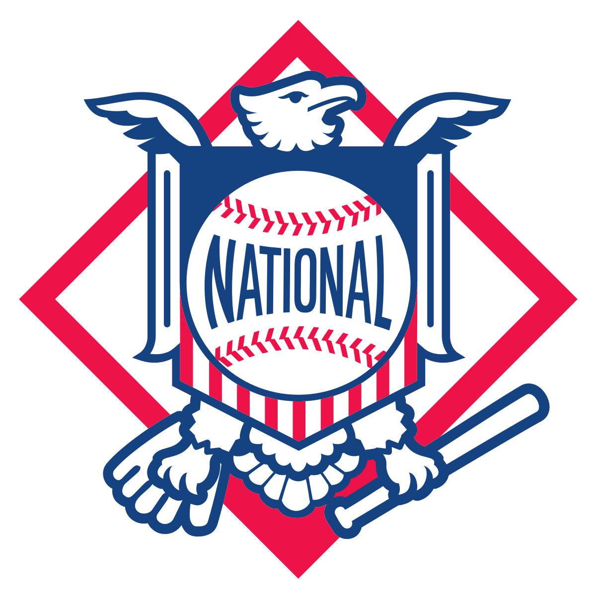

The National League of Professional Baseball Clubs, known simply as the National League (NL), is the older of two leagues constituting Major League Baseball (MLB) in the United States and Canada, and the world's oldest extant professional team sports league. Founded on February 2, 1876, to replace the National Association of Professional Base Ball Players (NAPBBP) of 1871–1875 (often called simply the "National Association"), the NL is sometimes called the Senior Circuit, in contrast to MLB's other league, the American League, which was founded 25 years later and is called the "Junior Circuit"
Both leagues currently have 15 teams. After two years of conflict in a "baseball war" of 1901–1902, the two eight-team leagues agreed in a "peace pact" to recognize each other as "major leagues", draft rules regarding player contracts, prohibiting "raiding", regulating relationships with minor leagues and lower level clubs, and with each establishing a team in the nation's largest metropolis of New York City, and the league champions of 1903 arranged to compete against each other in the new professional baseball championship tournament with the inaugural "World Series" that Fall of 1903, succeeding earlier similar national series in previous decades since the 1880s. After the 1904 champions failed to reach a similar agreement, the two leagues also formalized the new World Series tournament beginning in 1905 as an arrangement between the leagues themselves. National League teams have won 51 of the 116 World Series championships contested from 1903 to 2021.